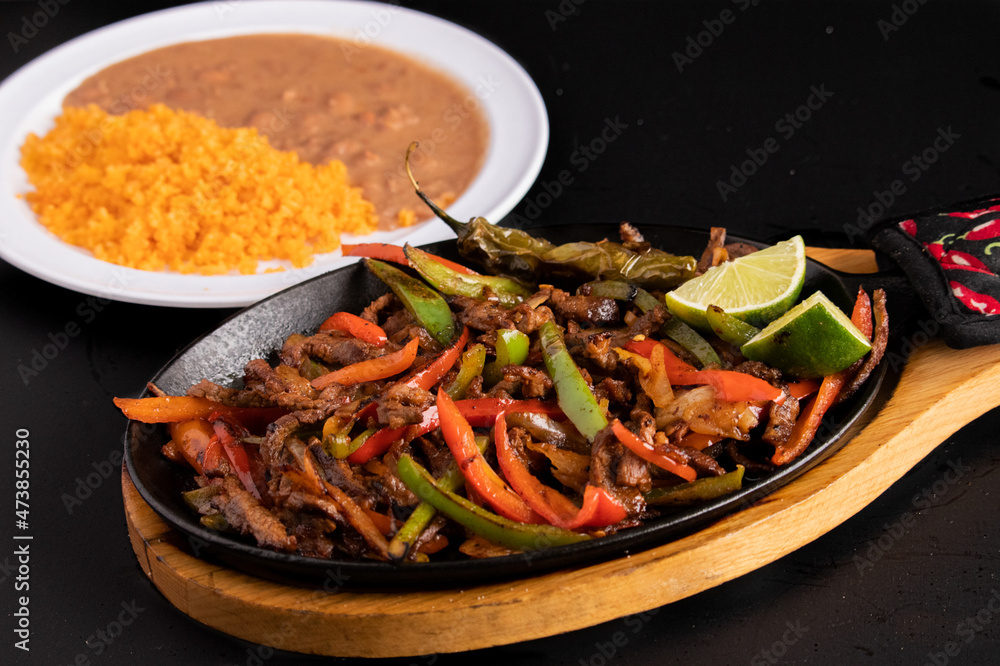

Fajitas

Recipes
Description
A simple yet effective Mexican dish. Onions, Bell Peppers, and your choice of protien all on a corn/flour tortilla.
Ingredients
- Protien (chicken, steak, pork, etc.)
- Onions
- Bell Peppers
- Tortillas
- Jalepenos
- Hot Sauce
- Cheese
- Spinach
- tomatoes
Steps
- Defrost your protien, cut into cubes or strips. Cook protien over med/high heat with extra virgin olive oil or beef talo. Season the meat while cooking with salt, pepper, garlic, I like to add spicy red chilies. Once fully cooked set aside and store.
- Prepare the veggies. Cut up your onions, bell peppers, jalepenos, and fresh garlic cloves and add them to your pan. Cook over med/high heat with extra virgin olive oil. Season with salt and pepper. Stir often to avoid burning.
- Make your plate. First your tortilla, then your protien, veggies, cheese, hot sauce, spinach, and tomatoes. (in that order) Enjoy!